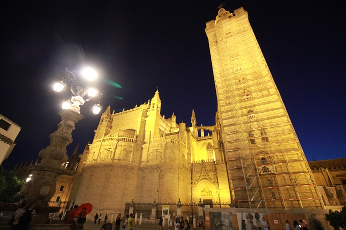

| 1 | : | Me recuperé poco a poco del jet lag y me desperté después de las 6:00. |
| 2 | : | Íbamos a Sevilla en coche de alquiler ese día. |
| 3 | : | Después del checkout, fuimos a la estación en taxi. |
| 4 | : | La compañía de alquiler de autos estaba al lado de la estación. |
| 5 | : | A las 8:00 el mostrador se abrió y Kanako y Richard manejaron. |
| 6 | : | Tenían que hablar sobre el seguro y otros detalles pero la empleada hablaba inglés con fluidez, así que pudieron manejarlo todo sin problema. |
| 7 | : | Adquirimos un Volvo con un sistema de navegación. |
| 8 | : | Como los coches en España tienen el volante al lado izquierdo y corre por el lado derecho de la carretera igual que en Estados Unidos, Richard pudo acostumbrarse pronto a conducir. |
| 9 | : | Muchos cruces en España eran rotondas. |
| 10 | : | Richard dijo que no había una rotonda en Estados Unidos y fue su primera experiencia. |
| 11 | : | Yo nunca he visto una rotonda en Japón, tampoco. |
| 12 | : | Salimos de la ciudad y entramos en la autopista. |
| 13 | : | El paisaje a lo largo de la autopista era solo campos de olivos. |
| 14 | : | En el camino fuimos a una tienda en una estación de servicio. |
| 15 | : | Compramos panes y bebidas y desayunamos en el coche. |
| 16 | : | Llegamos a Sevilla en casi 2 horas. |
| 17 | : | Sin embargo había muchos callejones estrechos y fue muy difícil llegar al parqueo aunque seguíamos la navegación. |
| 18 | : | Logramos llegar al parqueo confiando en el mapa del libro guía. |
| 19 | : | Richard ya había descubierto que la mayoría de los hoteles en Sevilla no tenían parqueo propio y teníamos que usar un parqueo público. |
| 20 | : | No era hora de registrarnos así que dejamos nuestro equipaje en el coche y salimos para hacer turismo. |
| 21 | : | Caminando por la ciudad y estábamos convencidos del porqué los hoteles no tienen parqueo. |
| 22 | : | Había muchos callejones estrechos y sinuosos en los que los coches no podían entrar y el mapa del libro guía era inútil. |
| 23 | : | Nos dirigimos al Alcázar confiando en el GPS del teléfono inteligente de Richard. |
| 24 | : | Caminamos por casi 10 minutos y llegamos al Alcázar. |
| 25 | : | Ya había una larga cola para comprar el billete para entrar. |
| 26 | : | Kanako y yo estábamos en la cola y Richard y John salieron para tomar unas fotos. |
| 27 | : | La región andaluz estaba muy soleada y hacía mucho calor. |
| 28 | : | Estuvimos en la cola durante, aproximadamente, una hora y finalmente pudimos entrar. |
| 29 | : | El billete para entrar costaba €11.50 por persona. |
| 30 | : | Decidimos el lugar y la hora de reunión y pasamos unas horas separados de Kanako y Richard. |
| 31 | : | Después del Alcázar íbamos a ir a la catedral cercana. |
| 32 | : | Esperábamos estar en una larga cola otra vez. |
| 33 | : | Decidimos que la primera persona en llegar, estaría en la cola. |
| 34 | : | El Alcázar de Sevilla se ha registrado como Patrimonio de la Humanidad. |
| 35 | : | El castillo islámico fue usado desde el siglo IX hasta el siglo XI, pero después de la reconquista los reyes católicos lo reconstruyeron. |
| 36 | : | El sitio era muy grande y la decoración interior era muy fina y lujosa. |
| 37 | : | Hermosas plantas florecían en el gran jardín y había un baño cerca de allí. |
| 38 | : | Aunque era un baño, era como una larga piscina cubierta. |
| 39 | : | El interior era muy tranquilo y hermoso y muchas personas tomaban fotos allí. |
| 40 | : | Había muchas habitaciones que teníamos que ver y las vimos rápidamente. |
| 41 | : | Nos encontramos con Richard y Kanako varias veces dentro del edificio y cada vez retrasábamos la hora de la reunión. |
| 42 | : | Vimos las partes mayores y salimos del Alcázar. |
| 43 | : | Tomamos bebidas y un poco de comidas en una pequeña tienda cercana y nos dirigimos a la catedral. |
| 44 | : | Kanako y Richard llegaron al mismo tiempo que nosotros y pudimos entrar sin estar en una cola. |
| 45 | : | El billete para entrar costaba €9.00 por persona. |
| 46 | : | En ese momento John no se quejó de pagar para entrar a una catedral. |
| 47 | : | La catedral y la torre Giralda están registradas como Patrimonio de la Humanidad. |
| 48 | : | La construcción comenzó en 1401 después de destruir una mezquita y se completó en 1519. |
| 49 | : | La catedral es la más grande de España y es la tercera más grande de Europa después de San Pedro en Roma y San Pablo en Londres. |
| 50 | : | He estado en esas dos catedrales. |
| 51 | : | En mi impresión, la catedral de Sevilla parece que es más lujosa que la de san Pablo. |
| 52 | : | Pero no hay catedral que pueda ganarle a la de San Pedro en tamaño ni en lujo. |
| 53 | : | San Pedro es tan lujosa que puedo imaginar que hicieron algo absolutamente malo en el proceso de la construcción. |
| 54 | : | Dentro de la catedral de Sevilla está la tumba de Cristóbal Colón y las cuatro estatuas de los reyes que componían España en esa época, ellos llevan la urna de Colón. |
| 55 | : | Había muchos adornos finos en todas partes, pero en ese momento ya me había acostumbrado al lujo. |
| 56 | : | Estábamos rezando a Dios porque el día de la cirugía de Lilian sensei estaba cerca. |
| 57 | : | Subimos la torre Giralda de 97 metros de altura, desde el interior de la catedral. |
| 58 | : | La torre fue construida a finales del siglo XII como un minarete de una mezquita y añadieron campanarios de estilo platerezco en el siglo XVI. |
| 59 | : | Para subir no había escaleras sino había una rampa. En el camino había algunos espacios de observación y pudimos subir con diversión. |
| 60 | : | En la plataforma de observación a 70 metros de altura había muchas enormes campanas con decoración espléndida. |
| 61 | : | Desde allí pudimos ver la ciudad de Sevilla y el Alcázar que habíamos visitado y sentí el viento fresco. |
| 62 | : | Salimos de la catedral y decidimos verificar la ubicación del hotel antes de recoger nuestro equipaje del coche. |
| 63 | : | Porque nos imaginamos que sería muy difícil encontrar el hotel llevando nuestro equipaje. |
| 64 | : | Como era de esperar, encontrar el hotel fue muy difícil aunque usamos el GPS de Richard. |
| 65 | : | Pasábamos por el mismo camino varias veces y finalmente encontramos el Hotel Alcántara. |
| 66 | : | Llegamos al hotel, pero esta vez no podíamos encontrar el parqueo. |
| 67 | : | Le preguntamos a un hombre en un restaurante cercano y nos enseñó la ubicación del parqueo. |
| 68 | : | Finalmente llegamos al parqueo pasando un camino muy estrecho, entre edificios. |
| 69 | : | Descargamos el equipaje y teníamos que regresar al hotel. |
| 70 | : | Pero pudimos llegar al hotel sin perdernos porque cuando íbamos al parqueo, habíamos tomado unas fotos para marcar la ruta. |
| 71 | : | Hay un teatro flamenco en el mismo edificio del hotel. |
| 72 | : | Nos dijeron que los clientes del hotel podían verlo por €15.00. |
| 73 | : | Lo habíamos visto el día anterior en Córdoba, así que no íbamos a verlo dos días seguidos. |
| 74 | : | Le dijimos al hombre de la recepción del hotel que acabábamos de ver flamenco en Córdoba pero él comenzó a hablar en español rápido y emocionado. |
| 75 | : | Parecía que los bailarines del día eran excelentes y el flamenco era completamente diferente a otros. |
| 76 | : | Pensamos que todos dirían eso, pero decidimos verlo porque era una buena oportunidad. |
| 77 | : | Tratamos de hacer una reserva para ese espectáculo de las 22:00, pero teníamos que esperar a que hubiera una cancelación. |
| 78 | : | Sin embargo el recepcionista nos dijo que era probable que los invitados lo vieran por eso esperamos 15 minutos antes del espectáculo en el vestíbulo del hotel. |
| 79 | : | Haciendo eso tuvimos tiempo, así que decidimos ir a la plaza de toros de la Real Maestranza. |
| 80 | : | Cuando salimos del hotel, justo antes del primer espectáculo de flamenco del día y había mucha gente con ropa elegante en el vestíbulo. |
| 81 | : | Esperábamos que el espectáculo del día fuera fantástico. |
| 82 | : | Caminábamos despacio, observando la ciudad y comiendo helado, entonces llegamos a la plaza en menos de 30 minutos. |
| 83 | : | La plaza de toros de la Real Maestranza fue construida en el siglo XVIII. |
| 84 | : | No queríamos ver la corrida de toros, pero nos interesamos en ver la plaza. |
| 85 | : | Compramos el billete para entrar con la guía de las 20:10. |
| 86 | : | Costaba €8.00 por persona. |
| 87 | : | Pronto comenzó el tour y vimos el interior de la plaza con una guía. |
| 88 | : | Nuestra guía fue una mujer japonesa. |
| 89 | : | Ella guió en inglés y en español. |
| 90 | : | Al principio vimos el museo y luego fuimos a los asientos de la plaza de toros. |
| 91 | : | La plaza de toros justo después de la puesta de sol, estaba tranquila y hermosa. |
| 92 | : | Pero todavía no quiero ver corridas de toros. |
| 93 | : | Entonces comimos tapas en un bar y volvimos al hotel rápidamente. |
| 94 | : | Cuando estábamos esperando en el vestíbulo del hotel, nos llamaron con el número de nuestra habitación. |
| 95 | : | Pagamos €15 cada uno y pudimos entrar. |
| 96 | : | No pudimos beber nada diferente a lo que bebimos en el espectáculo del día anterior. |
| 97 | : | Y nos prohibieron tomar fotos. |
| 98 | : | Primero comenzó la música flamenca de la guitarra. |
| 99 | : | Solamente escucharla, sentí que la calidad era completamente diferente a la del día anterior. |
| 100 | : | Luego, comenzó el baile y pude entender completamente lo que el hombre de la recepción había querido decir. |
| 101 | : | La punta de los dedos, las expresiones faciales y todo el cuerpo eran artísticos. |
| 102 | : | El espectáculo de una hora terminó muy rápido y todos aplaudimos. |
| 103 | : | Agradecimos al hombre de la recepción con emoción. |
| 104 | : | Ese día también estuvimos exhaustos y fuimos a la cama pronto. |
{kind=link}
{kind=link}
{kind=link}
{kind=link}
{kind=link}
{kind=link}
{kind=link}
{kind=link}
{kind=link}